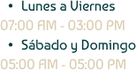

del Rosario
En 1588, el arzobispo Fray Luis Zapata ordenó construir el primer templo a Nuestra Señora del Rosario de Chiquinquirá en terreno donado, dando inicio al fervor maría. Un sismo en 1927 dañó la Basílica, pero fue restaurada y, en una solemne misa, Colombia fue consagrada a la Virgen en su trono renovado. El 3 de julio de 1986, Juan Pablo II visitó la Basílica, y en 1989, la imagen fue llevada a Bogotá para presidir una oración por la paz.

¡Deseas obtener más información del lugar!




Dirección
Cl. 18, Chiquinquirá, Boyacá
Contacto
(608) 726 2435 - (313) 249 1385